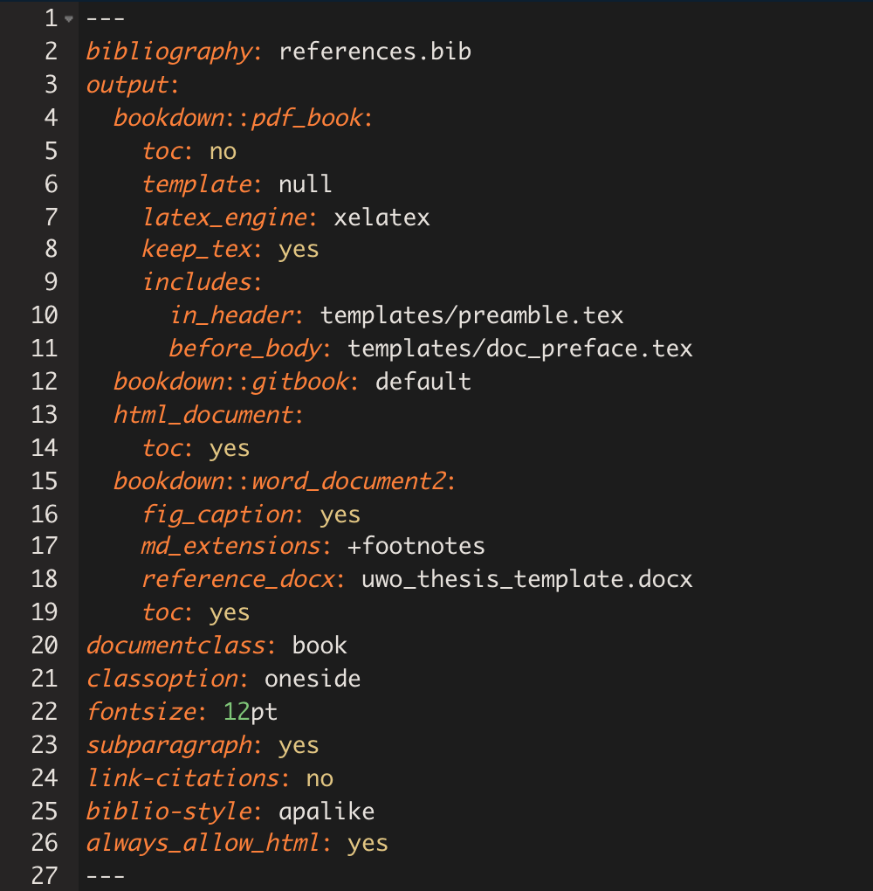

Chapter 5 Making a book!
This section is heavily informed by Lucy’s beautiful blog post and accompanying toolkit.
Now that we have the bare bones of a dissertation, we can compile it for the first time.
Go to exercise 4 in Section 9.4
Recall that, for this method, the essential ingredients are:
- your .Rmd files (chapters)
- index.Rmd
Optional ingredients:
- references.bib
- templates
5.1 The workhorses
The files that will do the heavy lifting in order for your dissertation to compile as a PDF are:
index.Rmdcontains the YAML5params.texpreamble.tex
index.Rmd

This contains a lot of info. You can specify different options for each output type you plan to compile. Since we’ll be compiling to PDF (pdf_book), let’s take a closer look at that section:
output:
bookdown::pdf_book:
toc: no
template: null
latex_engine: xelatex
keep_tex: yes
includes:
in_header: templates/preamble.tex
before_body: templates/doc_preface.texImportantly, we are pointing to the two other workhorses necessary for the PDF output: the .tex files. Note that these are adapted from people who know a lot more about LaTeX than I do; I changed very little, and mostly just moved stuff around. In their current form, they will output a document that adheres to the current Western thesis standards6.
- The
in_headerline tells bookdown to incorporate everything inpreamble.tex. If you’re familiar with LaTex, this is everything that comes before\begin{document}. This also contains important info like your name, department, thesis title, etc…
preamble.tex

- The
before_bodyline points todoc_preface.texwhich contains all the pre-body text including the abstract, acknowledgements, table of contents, etc
doc_preface.tex

5.2 Ready, set, render!
To compile your dissertation for the first time, enter the following code in the console:
bookdown::render_book("index.Rmd", "bookdown::pdf_book")Note that here we are specifying the pdf_book output format, but we don’t actually have to since it happens to be the first, and therefore default, output format specified in our YAML. We could just as successfully run bookdown::render_book("index.Rmd").
If all goes according to plan, you will see a smattering of new folders and files.
Your shiny new book can be found in _book/_main.pdf
If things did not go according to plan, you will get an error and a request that you delete _main.Rmd before recompiling. _main.Rmd is a document that’s created in the process, but gets deleted when the final output has successfully compiled. It can often give you hints as to what went wrong (the lines where it got tripped up will be echoed in the error message). As instructed, you must delete it before you try to render again.
Other things to know
- This is the “Merge-and-Knit” approach. See Yihui’s explanation of other rendering approaches here.
- Yihui also recommends not rendering the full PDF that often, as it can be very time consuming when the output is large, and you run the risk of getting caught up with typesetting queries that are best left to the end. There is a way to preview individual chapters that Yihui has included in bookdown, but I will also discuss my own preview methods later on.
- If you choose to use the LaTeX nomenclature package to handle abbreviations, you need to do some additional work to get the abbreviations to show up the first time. I recommend scrolling to this section in Lucy’s blog post
- Chapter headers (Chapter 1, Chapter 2, etc) are inserted when you use a first level header, e.g.
# Header 1. Subsections within a chapter are assigned based on the subheaders you use (e.g.,## Header 2,### Header 3…)
YAML (rhymes with camel): The frontmatter/metadata that tells R Markdown how to generate your document. Indentation and spacing are very important. Stands for “YAML Ain’t Markup Language” or, less meta, “Yet Another Multicolumn Layout.”↩
The
thesisdown package readmehas a nice list of other templates that people have adapted for their universities if you’d like to compare other .tex input files.↩